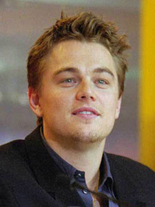
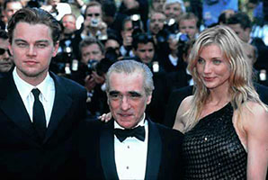
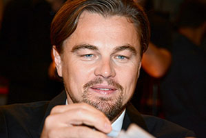

Ранние годы
СодержаниеРодился 11 ноября 1974 года в Лос-Анджелесе, Калифорния. Леонардо является единственным ребёнком автора комиксов Джорджа Ди Каприо (род. 30 ноября 1943 года) и секретаря суда Ирмелин Инденбиркен (род. в 1943). Отец имеет наполовину итальянские (из Неаполя) корни, наполовину немецкие (из Баварии). Мать родилась в западногерманском Ор-Эркеншвике в бомбоубежище у немца Вильгельма Инденбиркена и русской эмигрантки Хелены Инденбиркен (1915—2008) (урождённая Елена Степановна Смирнова), которая после Октябрьской революции была вывезена родителями в Германию. В 1955 году Вильгельм и Хелена эмигрировали в США. В 2010 году на Тигрином саммите Леонардо в разговоре с Владимиром Путиным сказал, что Хелена, несмотря на то, что ей было два года, когда её увезли из России, умела говорить по-русски, и что его дед (он не сказал, по какой именно линии) также был русским, и добавил:
«Так что я не на четверть, а наполовину русский».
Будущий актёр получил имя Леонардо благодаря матери, так как он впервые задвигался у неё в животе, когда она смотрела картины Леонардо да Винчи будучи беременной. Когда Лео исполнился год, Джордж и Ирмелин развелись, и сын остался с матерью. Лео жил в нескольких кварталах Лос-Анджелеса, таких, как Эко-Парк и 1874 Хиллхарст-авеню, пока его мать работала на нескольких работах.
Обучался в Начальной Школе Сидд, потом поступил в Центр Расширенных Наук Лос-Анджелеса, в котором проучился четыре года.
Карьера
СодержаниеРанние работы
Впервые Леонардо появился перед камерой ещё в два с половиной года, когда отец отвёл его на популярное детское телешоу. В 14 лет Леонардо Ди Каприо решил стать актёром. Он нашёл агента, которому понравились и его стрижка, и его имя. Он снялся в более чем 30 рекламных роликах и в нескольких сериалах: «Санта Барбара», «Новые приключения Лесси», «Розанна» и других.
1991—1995
Его дебютом в кино стал комедийный фильм ужасов «Зубастики 3»[11]. С 1991 года он снимался в сериале «Болезни роста», но вскоре покинул его, чтобы сняться с Робертом Де Ниро и Эллен Баркин в фильме «Жизнь этого парня».
Позже, в 1993 году, он вместе с Джонни Деппом играет в драме «Что гложет Гилберта Грэйпа». В этом фильме он сыграл Арни, умственно отсталого брата Гилберта. Картина имела успех у критиков, а за роль умственно неполноценного ребёнка Ди Каприо был впервые номинирован на «Золотой глобус» и «Оскар».
В 1995 году Ди Каприо получает роль в вестерне Сэма Рэйми «Быстрый и мёртвый», где помимо него играли Шэрон Стоун, Джин Хэкмен и Рассел Кроу. Также он снимается в фильме «Полное затмение» в роли поэта Артюра Рембо, влюбившего в себя своего старшего коллегу — поэта Поля Верлена (актёр Дэвид Тьюлис), которому он послал свои стихи, и Верлен, оценив его незаурядное дарование, пригласил его приехать в Париж. Лео заменил Ривера Феникса, умершего во время съемок фильма[13]. Актёр виртуозно сыграл гомосексуальную привязанность, связь и страсть, с бесконечными абсентными возлияниями, бродяжничеством, встречами-разлуками двух сложных творческих личностей в эпоху консервативных ценностей после подавления Парижской Коммуны. Однако, несмотря на положительные отзывы критиков, особого успеха в прокате фильм не имел.
После этой работы Ди Каприо сыграл главную роль в экранизации автобиографического романа Джима Кэрролла «Дневник баскетболиста». Фильм рассказывает о шестнадцатилетнем подростке, играющем в баскетбол и пишущем хорошие стихи, но как только он впервые пробует наркотики, в его жизни происходит стремительное падение и деградация.
Пробовался на роль Робина в фильме «Бэтмен навсегда» (в итоге этого персонажа сыграл Крис О'Доннел).
1996—2001
В 1996 году Леонардо вместе с Клэр Дэйнс появляется в фильме База Лурмана «Ромео + Джульетта». Фильм является интерпретацией трагедии «Ромео и Джульетта» Уильяма Шекспира, но действие пьесы перенесено в современность. Это один из первых кассово успешных фильмов Лео[14] и любимый фильм его отца.
Ди Каприо на презентации фильма «Пляж»; 2000 год. Позже он снова играет с Робертом Де Ниро в семейной драме «Комната Марвина», в которой он исполнил роль трудного подростка[15]. В картине также снялись Дайан Китон и Мерил Стрип.
Однако главной картиной, принёсшей Леонардо мировую популярность, стал «Титаник» Джеймса Кэмерона. Первоначально Лео хотел отказаться от роли, но в конце концов согласился, поскольку Кэмерон верил в его актёрские способности. Фильм стал главным культурным событием года и получил 11 премий «Оскар», однако церемония сопровождалась скандалом, поскольку киноакадемики не выдвинули Лео в категории «Лучшая мужская роль». В знак протеста более 200 поклонников актёра обратились в Академию с претензиями, а сам Лео наотрез отказался посещать церемонию. Тем не менее Лео был номинирован на премию «Золотой глобус». Именно роль в «Титанике» вывела Ди Каприо в ряды самых высокооплачиваемых актёров Голливуда. В 1997 году Леонардо был включён в список «50 самых красивых людей мира» по версии журнала People.
Ди Каприо появляется в камео в чёрно-белом фильме Вуди Аллена — «Знаменитость». В этом же году он играет короля Людовика XIV в картине «Человек в железной маске». Несмотря на холодную реакцию критиков, фильм собрал около 180 миллионов долларов в американском и мировом прокате. Ди Каприо был «удостоен» за эту роль антипремии «Золотая малина» как «Худший актёрский дуэт» за роли короля и его брата-близнеца.
Следующим проектом Ди Каприо стала приключенческая драма Дэнни Бойла «Пляж», по одноимённому роману-бестселлеру Алекса Гарленда. Он сыграл американского туриста, который в поисках лучшей жизни приезжает в Таиланд, где отправляется на секретный остров — настоящий рай. В картине также снялись француженка Виржини Ледуайен и британка Тильда Суинтон. Лента, несмотря на неплохие кассовые сборы, как и предыдущий фильм Лео, не имела успеха у критиков. Ди Каприо был вновь номинирован на антипремию «Золотая малина», но в этот раз худшим артистом был признан Джон Траволта, за роли в фильмах «Поле битвы: Земля» и «Счастливые номера». Также в прокат вышла картина Кафе «Донс Плам», снятая в 1996 году по задумке самого же Ди Каприо.
2002—2007
В начале 2000-х годов Ди Каприо проявлял интерес к проекту «Американский психопат», но отказался от роли Патрика Бэйтмана (его сыграл Кристиан Бейл). Также он мог сыграть Питера Паркера в экранизации знаменитого комикса «Человек-паук», но уступил это право Тоби Магуайру[источник не указан 1317 дней].
Первым для Лео фильмом в 2002 году стала криминальная трагикомедия режиссёра Стивена Спилберга «Поймай меня, если сможешь». Фильм был основан на биографии Фрэнка Эбигнейла, который известен своими дерзкими преступлениями, совершёнными ещё в 1960-е годы. Фильм снимался в 147 различных местах и был снят всего за 52 дня[18]. Фильм получил положительные отзывы критиков и стал для Ди Каприо одним из самых кассовых фильмов в его карьере. Лео в третий раз был номинирован на премию «Золотой глобус» как лучший исполнитель главной мужской роли.Также в 2002 году Ди Каприо впервые снялся у режиссёра Мартина Скорсезе в фильме «Банды Нью-Йорка» о столкновении между бандами «коренных» американцев и эмигрантов в Нью-Йорке. Мартин Скорсезе сначала хотел продать свою идею реализации фильма, но после того, как проектом заинтересовался Лео, режиссер изменил своё решение. Фильм имел успех как у критиков, так и у зрителей. Однако на премии «Оскар» «Банды Нью-Йорка» постигла неудача — ни одной премии из 10 номинаций. Работу Леонардо высоко оценили, но он остался в тени Дэниела Дэй-Льюиса, игру которого кинопресса оценила выше
Леонардо возвращается к Скорсезе и снимается в его новом фильме «Волк с Уолл-стрит». В основу фильма легли одноимённые мемуары Джордана Белфорта, бывшего нью-йоркского брокера, который был осуждён за отмывание денег и ряд прочих финансовых преступлений. Это пятая совместная работа Скорсезе и Ди Каприо. После завершения съёмок Лео заявил, что собирается отдохнуть от кино. За эту актёрскую работу он был удостоен второго «Золотого глобуса», а также вновь выдвинут на премии «Оскар» и BAFTA. На «Оскар» Ди Каприо был также номинирован за продюсирование фильма.
2014 — настоящее время
С осени 2014 года Ди Каприо участвовал в многомесячных съёмках фильма «Выживший» режиссёра Алехандро Гонсалеса Иньярриту. Леонардо исполнил роль траппера Хью Гласса, который в начале XIX века был брошен умирать в диких местах на северо-западе США, однако сумел выжить, несмотря на серьёзные травмы. Съёмки проходили в Канаде и на юге Аргентины и завершились только летом 2015 года. Фильм вышел на экраны в самом конце 2015 года, и 28 февраля 2016 года принёс Ди Каприо долгожданный «Оскар» за главную мужскую роль («Оскары» также получили Гонсалес Иньярриту за режиссуру и Эммануэль Любецки за лучшую работу оператора). Ди Каприо за эту роль получил целый ряд других премий, в том числе очередной «Золотой глобус» и премию BAFTA.
19 января 2016 года Леонардо Ди Каприо на Всемирном экономическом форуме в Давосе (Швейцария) получил премию Crystal Award за вклад в защиту окружающей среды. Создав в 1998 году фонд Leonardo DiCaprio Foundation, Ди Каприо выделил более 30 миллионов долларов на развитие 70 инновационных проектов в сфере защиты окружающей среды в 40 странах. Речь, в частности, идёт о защите морской фауны или видов животных, которым грозит вымирание. «Вместе мы боремся за сохранение хрупкого климата нашей планеты против необратимых разрушений», — сказал в Давосе актёр, который в 2014 году был назначен послом мира ООН по проблемам климата. В марте 2017 года стало известно, что Ди Каприо намерен инвестировать средства в компанию Love The Wild, которая специализируется на самостоятельном выращивании морепродуктов и реализации их в замороженном виде. Актёр обосновал своё решение тем, что: «Эксплуатация наших океанов привела к тому, что многие морские экосистемы оказались на грани полного коллапса, что сокращает наши возможности использовать моря в качестве надежного источника пищи, как мы это делали в течение тысяч лет».
Личная жизнь
СодержаниеЛичная жизнь Леонардо Ди Каприо широко освещается в средствах массовой информации. В 1990-х Леонардо Ди Каприо встречался с датской моделью Хеленой Кристенсен, с 2000 по 2005 год — с бразильской моделью Жизель Бюндхен, с 2006 года по 2009 год встречался с израильской моделью Бар Рафаэли. 26 марта 2010 года Ди Каприо и Рафаэли официально объявили о перерыве в отношениях. С лета 2010 года Лео и Бар опять стали встречаться и уже планировали пожениться, однако в мае 2011 года в газете New York Post появилось сообщение, что Леонардо Ди Каприо и Бар Рафаэли окончательно расстались.
C июня 2011 года встречался с актрисой Блейк Лайвли. В начале октября 2011 года появилось сообщение о том, что Леонардо Ди Каприо и Блейк Лайвли расстались, но обещали сохранить дружеские отношения. В декабре 2011 года стало известно, что Лео начал встречаться с моделью нижнего белья бренда Victoria’s Secret Эрин Хитертон, однако в ноябре 2012 года пара объявила о расставании в связи с напряжёнными графиками работы у обоих.
В мае 2013 года у актёра начались отношения с немецкой моделью Тони Гаррн, завершившиеся в декабре следующего года.
Позже, как пишут, во время перерыва в отношениях с Тони Гаррн, также встречался с Ниной Агдал и Лореной Рэй.
С конца 2017, и к лету 2018 года известен в постоянных отношениях с Камилой Морроне, молодой актрисой и моделью из Аргентины.
Лео владеет домом в Лос-Анджелесе и квартирой в Бэттери-Парк-сити в Нижнем Манхэттене. В 2009 году актёр купил остров Блэкадор около Белиза, на котором планирует открыть экологически чистый курорт.
В 2013 году актёр стал совладельцем гоночной команды Venturi Grand Prix Formula E Team для участия в Формуле-Е.